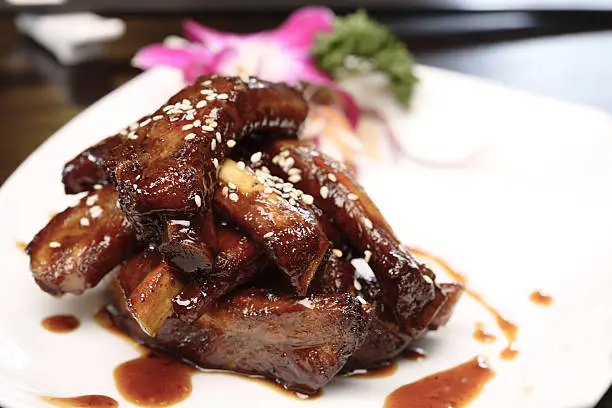

RECETAS DEL TAO
Costillas agridulces con tomate
Ingredientes
1/2 kg chuletas de cerdo cortadas a trozos
125 ml de Ketchup
Vinagre
2 cucharadas de azúcar blanco
Jenjibre
Cebollas verdes
Sal
Aceite de girasol
Agua
TIEMPO TOTAL 30 minutos
ELABORACIÓN 30 minutos
Preparación
Con las costillas cortadas a trozos, lo metemos a la olla con agua fría cubriéndose del todo, echamos jengibre y unos trozos de cebolla verde.
Después de que el agua ya esté hirviendo, apagamos el fuego y limpiamos las costillas.
Con una sartén calentando le echamos aceite, freímos las costillas hasta que se vean un poco doradas.
Después de que queden doradas, sacamos el aceite sobrado, y le añadimos: agua 1:1, azúcar, sal y vinagre a tu gusto.
Después de hervirlo unos 10 minutos, ponemos el fuego a menor potencia y le añadimos el ketchup. (cubriendo las costillas)
Después de unos 10~15 minutos apagamos el fuego y ya estaría listo para comer.
